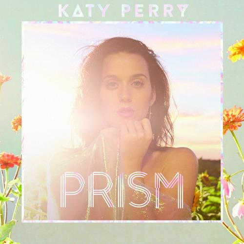
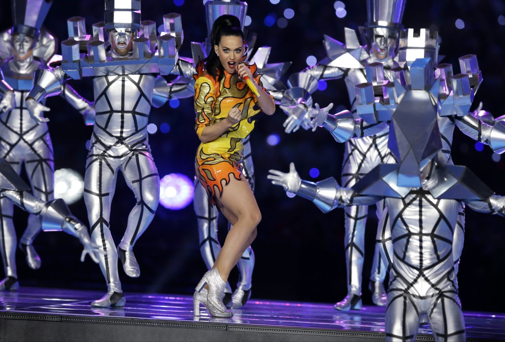

Katheryn Elizabeth (Santa Bárbara, California, Estados Unidos, 25 de octubre de 1984), más conocida por su nombre artístico Katy Perry, es una cantante, compositora y guitarrista estadounidense. También se ha dedicado a la actuación y a la filantropía. La intérprete finalmente firmó con Capitol Records en 2007. Perry adquirió fama tras el lanzamiento del sencillo «I Kissed a Girl» en año 2008, éste perduró por seis semanas en la cima de la lista estadounidense Billboard Hot 100. Sin embargo, hubo diversas reseñas negativas hacia la artista por el contenido lírico de la canción; incluso, la madre de Perry también mostró su desagrado. Su siguiente álbum, Teenage Dream (2010), llegó al primer lugar de varias listas de ventas y contiene canciones como «California Gurls», «Teenage Dream», «Firework», «E.T.» y «Last Friday Night (T.G.I.F.)», todos estos sencillos llegaron a la mejor posición de Billboard Hot 100 e hicieron que la artista igualara el récord de Michael Jackson, quién también consiguió colocar cinco sencillos en dicha posición con un solo álbum. En marzo de 2012 llevó a cabo la reedición de Teenage Dream que contiene los sencillos «Part of Me» y «Wide Awake». Su éxito permitió a la cantante realizar su gira de once meses de duración California Dreams Tour, que llegó a recaudar más de 60 millones de dólares y también su película autobiográfica Katy Perry: Part Of Me. Mientras estaba embarcada en esa gira comenzó a con el desarrollo de su cuarto álbum de estudio, Prism (2013), que se convirtió en su segundo álbum número uno en los Estados Unidos y Australia. Éste incluye los sencillos «Roar» y «Dark Horse», que cosecharon éxito en las listas alrededor del mundo; a junio de 2014, el álbum contaba con tres millones de copias. Ha lanzado fragancias llamadas Purr, Meow! y Killer Queen. El 23 de octubre de 2010, Perry contrajo matrimonio con el comediante británico Russell Brand en Rajastán (India), para posteriormente divorciarse en diciembre de 2011. Fuente: http://es.wikipedia.org/wiki/Katy_Perry Información de Katy Perry: Instagram: https://instagram.com/katyperry Twitter: https://www.twitter.com/katyperry Facebook: https://www.facebook.com/katyperry Información General: www.katyperry.com PRISM  ESCUCHAR PRISM COMPRAR PRISM 
Hace un mes tuvo un sensacional espectaculo en el HALFTIME XLIX SUPER BOWL